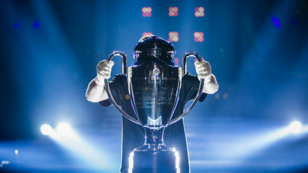

Moje Hobby
E-SPORT
Moja przygoda z e-sportem zaczęła się stosunkowo późno, patrząc na to w jakich czasach się urodziłem. Wszystko zaczęło się od gry Counter-Strike 1.6. W gmnazjum z paczką znajomych zaczęliśmy wspólnie grać i śledzić scenę profesjonalną. Później przyszedł krótki epizod gry w League Of Legends, jednak tutaj nie zatrzymam się na długo, ponieważ nie jest to tego warte. Aktualnie pod kątem e-sportowym króluje Dota 2. Piękne emocje i ogromne wydarzenia, gdze pula nagród potrafi sięgać nawet 85 milionów złoty.


Ulubieni gracze
- Ocelote - Carlos Rodríguez Santiago
- urodzony 15.01.1990, Hiszpania
- były mid-laner drużyny SK Gaming
- założyciel drużyny Gamers2, aktualnie G2 Esport
- Snax - Janusz Pogorzelski
- urodzony 5.07,1993 w Krakowie
- aktualny gracz Virtus Pro
- średnio wygrał: $517,129
- Miracle- - Amer Al-Barkawi
- pochodzenie polsko-jordańskie
- gracz drużyny Team Liquid, na pozycji Mid lub Carry
- średnio wygrał: $3,143,674
- Kuroky - Kuro Salehi Takhasomi
- urodzony 28.12.1992
- Kapitan i support drużyny Team Liquid
- średnio wygrał: $3,566,564